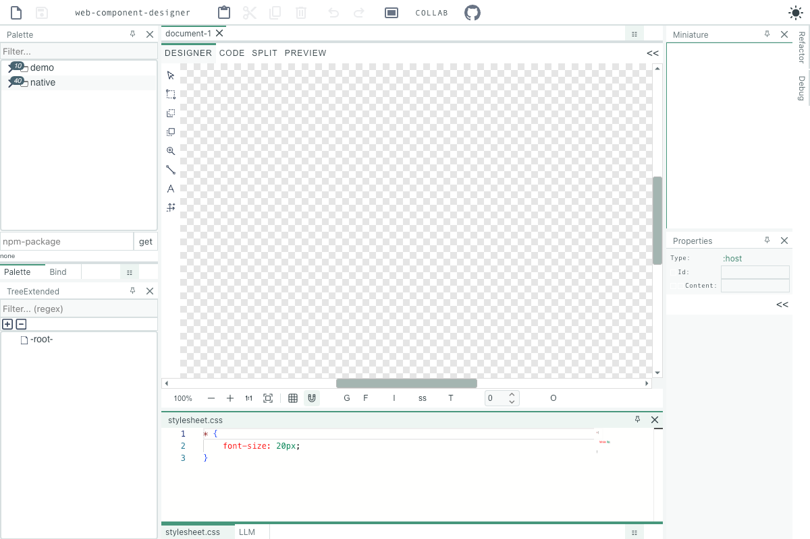

mite&firefly
JavaScript, a different species.
Familiar Node and Electron patterns. Independent Ladybird engines.
From your next script to your next desktop app.
Build from source · Tested on macOS ARM64 · More platforms in progress
Same JavaScript. New engine room.
01 / THE WORKBENCHimport {createServer} from 'node:http';
createServer((request, response) => {
response.setHeader('Content-Type', 'text/plain');
response.end('Hello, little world.\n');
}).listen(3000, '127.0.0.1');mite server.mjsNode-style modules. LibJS inside.import {readFile} from 'node:fs/promises';
import {createHash} from 'node:crypto';
const bytes = await readFile('package.json');
const hash = createHash('sha256');
hash.update(bytes);
console.log(hash.digest('hex'));mite hash.mjsPromises, Buffers and incremental hashes.import {app, BrowserWindow} from 'firefly';
await app.whenReady();
const window = new BrowserWindow({
width: 1200, height: 800
});
await window.loadFile('index.html');
app.on('window-all-closed', () => app.quit());firefly main.mjsHTML + CSS + JavaScript, on the desktop.Meet the inhabitants.
02 / FIELD NOTESMite
THE RUNTIMEScripts, servers, and the bits in between.
Mite brings a growing set of Node-compatible APIs to Ladybird’s LibJS. It runs on its own, without Firefly, a browser, Node, or V8.
Read the Mite reference ↗ESM & CommonJS
Files & streams
TCP, DNS & HTTP servers
Timers, OS & crypto foundations
Firefly
THE FRAMEWORKA window for what you’re building.
Electron-style application patterns, with Mite in the main process and LibWeb rendering your interface in separate Ladybird processes.
Read the Firefly reference ↗app & BrowserWindow
Native macOS windows
Local files & URL loading
Restricted renderer defaults
Web Component Designer.
A real app, running on Firefly.
The real Web Component Designer demo, running in Firefly. Mite serves the app. Ladybird draws the interface.

Tested: app boot, a document edit and Monaco. Broader designer features and native Windows support are still in progress.
Little steps.
Open notebooks.
This is an early, independent stack. Here’s what you can use today, and what’s still taking shape.
Follow the implementation ↗Mite on macOS ARM64 Selected Node APIs, real npm packages, differential tests.
Firefly + the Designer sample Native windows, loading, lifecycle and experimental macOS bundles.
Public preload, bridge & IPC Internal isolation tests exist; these public APIs remain unsupported.
Native Windows & Linux releases Platform adapters, packaging and native validation remain open.
An independent family tree.
05 / UNDERNEATH IT ALLLadybird stays unmodified. Our adapters handle integration, so we can keep following upstream.
How upstream updates work ↗